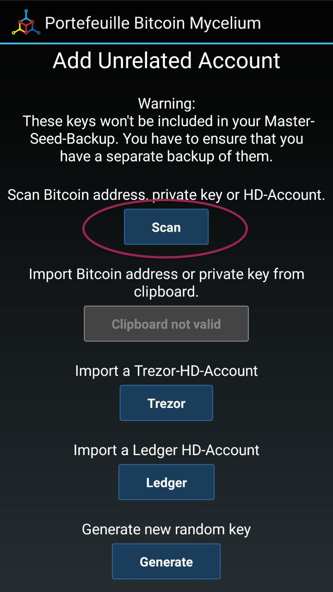

The tool is curently only compatible with the release Firefox above version 36 download here
This procedure will expose your private key!!!
This is your WIF private key; you may import it in any other compatible wallet client.
1 - Download Mycelium from the Android Play Store download here
2 - Select Accounts 3 - Press the '+' with the key symbol 4 - Select 'Advanced' then scan your private key Once your private key has been imported you can use your bitcoin address and your fund in this wallet
1 - Download Bread Wallet from the iTunes AppStore download here
2 - Open Bread Wallet then press the top right button
3 - Press the top right button
4 - Select import private key and scan your private key (QR Code)
Once your private key has been imported you can use your bitcoin address and your fund in this wallet